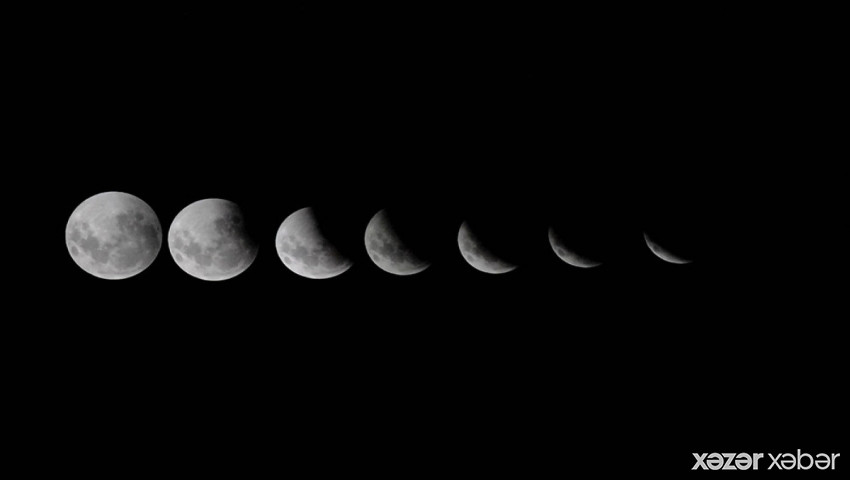

Gündəm | 09:02

Mayın 16-da 2022-ci ilin ilk Ay tutulması hadisəsi başlayıb. Bu, tam Ay tutulmasıdır.
AMEA N.Tusi adına Şamaxı Astrofizika Rəsədxanasından xezerxeber.az-a bildirilib ki, tutulma saat 07:29-da başlayıb və saat 08:53-də isə sona çatacaq. Tutulmanın maksimumu saat 08:11-də qeydə alınacaq.
Bu təbiət hadisəsini Şimali və Cənubi Amerika, Avropa, Afrika və Asiyanın bir hissəsindən görmək mümkündür. Tutulma zamanı Ay üfüqdən aşağıda olduğu üçün tutulma hadisəsi Azərbaycanda müşahidə olunmur.
Videonu aşağıdan izləyə bilərsiniz: